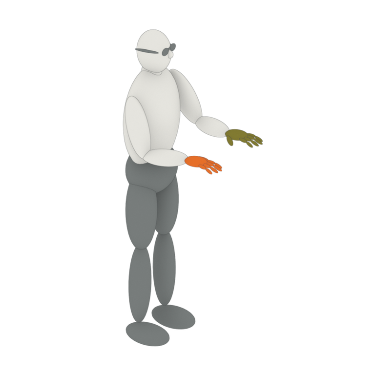
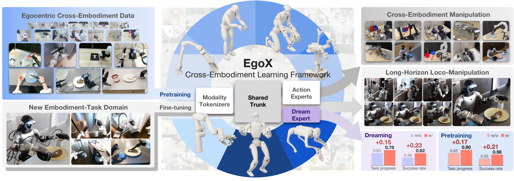
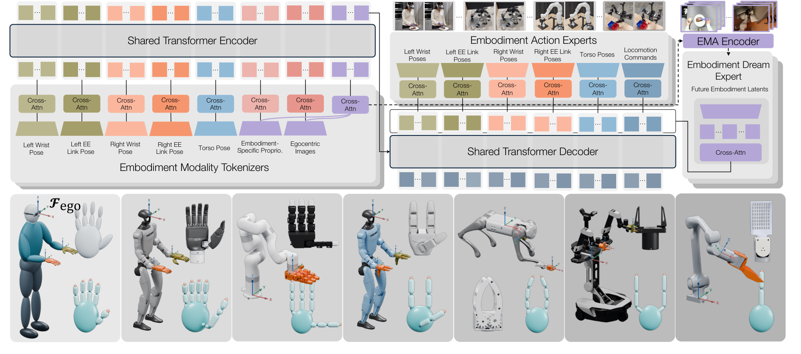
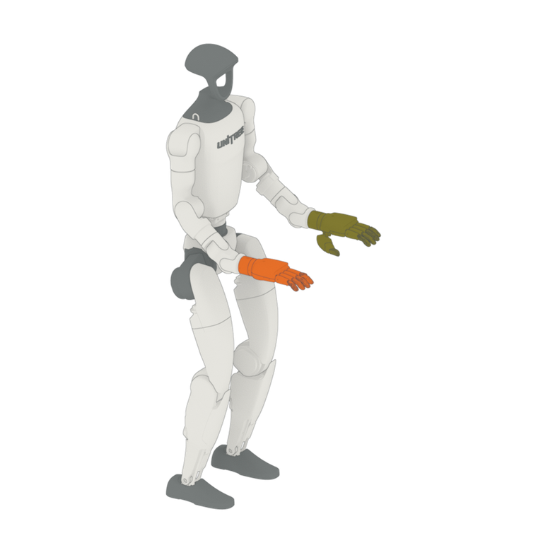
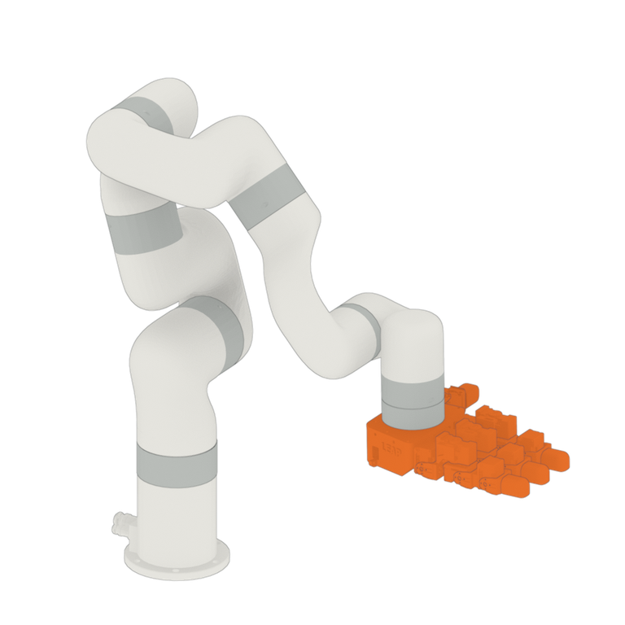
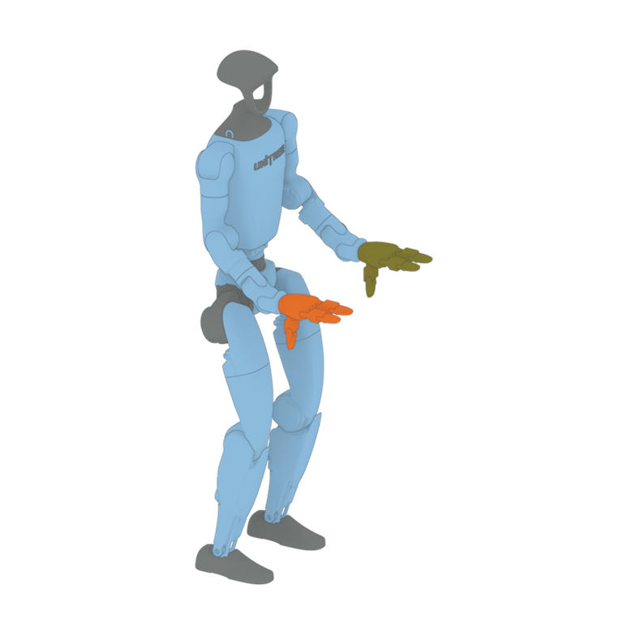
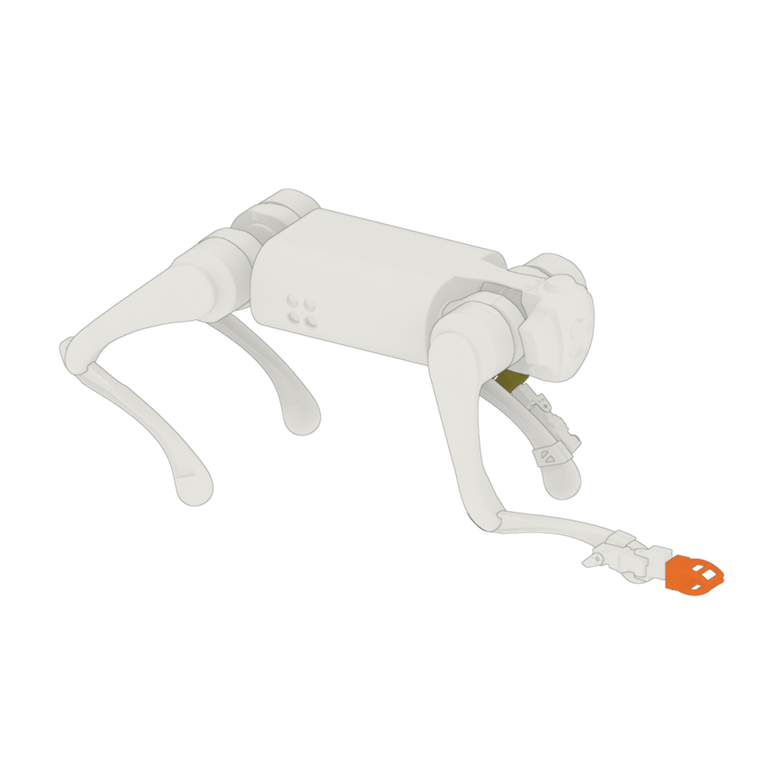
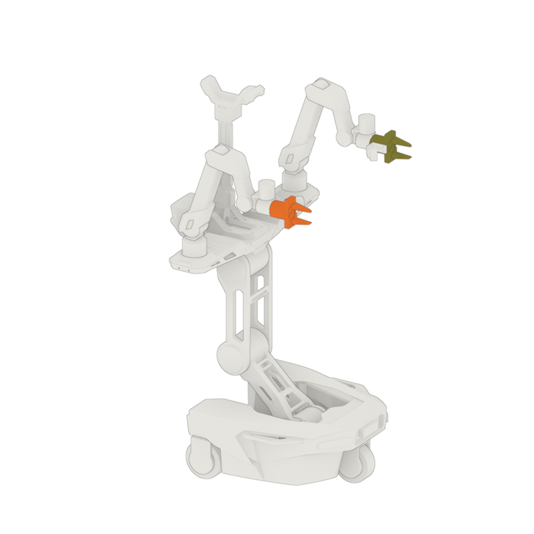
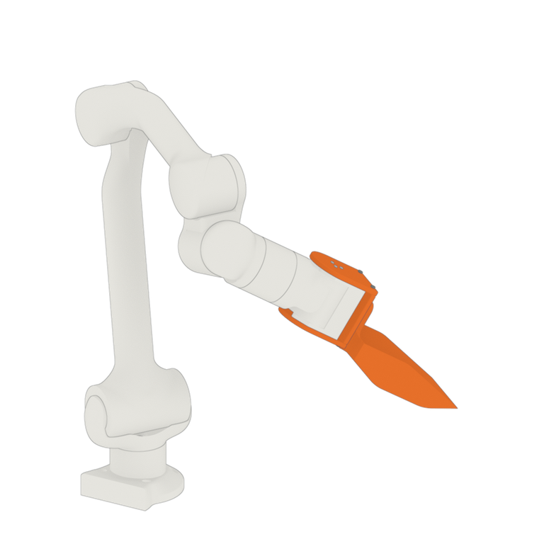

EgoX
Egocentric Cross-Embodiment Manipulation
with Embodiment Dreaming
with Embodiment Dreaming

Overview of EgoX. EgoX learns from highly diverse embodiments, including humans, a humanoid, a wheeled bimanual robot, a quadruped, tabletop arms, and a simulated humanoid, with dexterous hands, grippers, and tools as end-effectors. It first pretrains on egocentric cross-embodiment data from humans and robots (top left), then fine-tunes on a new embodiment–task domain (bottom left). Its model, MXT+, routes each embodiment's observations through modality tokenizers into a shared Transformer trunk and decodes actions with embodiment-specific action experts, while a training-only dreaming expert predicts future embodiment latents (center). The resulting policies perform manipulation across embodiments and long-horizon loco-manipulation on a humanoid (right, top and middle). Embodiment dreaming and cross-embodiment pretraining both improve the average task progress score and success rate (right, bottom).
Abstract
Generalist manipulation policies can benefit from the complementary experience of humans, real robots, and simulated agents. However, differences in morphology, sensing, and control interfaces make it difficult to learn effectively from their combined demonstrations. We introduce EgoX, an egocentric cross-embodiment learning framework that organizes heterogeneous demonstrations through semantically corresponding observation and action modalities. EgoX pretrains a Modularized Cross-Embodiment Transformer with Embodiment Dreaming (MXT+) on this mixture and fine-tunes it on target-embodiment demonstrations. Within each embodiment, MXT+ assigns a dedicated tokenizer to each observation modality and a dedicated expert to each action modality, with a Transformer trunk shared across embodiments. A training-only embodiment-dreaming objective predicts latent representations of future visual and proprioceptive states, encouraging the shared trunk to model each embodiment's dynamics. Across 13 task–embodiment pairs spanning five tasks and six robot embodiments, including five physical robots and one simulated humanoid, cross-embodiment pretraining raises MXT+'s average normalized task progress from 0.63 to 0.80 over training from scratch. The gains are particularly pronounced under out-of-distribution conditions, where average task progress increases from 0.53 to 0.77. Ablations demonstrate the benefits of broader pretraining mixtures, modular interfaces, and embodiment dreaming, with dreaming producing more similar latent geometry across embodiments.
Method
EgoX makes three key design decisions. (i) It organizes heterogeneous human, real-robot, and simulated demonstrations into a shared modality structure, with coordinate conventions chosen for each modality. (ii) Its model, MXT+, encodes each observation modality with an embodiment-specific tokenizer for a shared Transformer trunk and decodes the trunk output into each action modality with a modular action expert. (iii) The auxiliary embodiment-dreaming objective encourages the trunk to learn each embodiment's dynamics; the dreaming expert and its EMA teachers are used only during training. EgoX pretrains MXT+ on mixed cross-embodiment data and fine-tunes it on the target embodiment and task.

MXT+ Architecture and EgoX Embodiments. Top: embodiment-specific modality tokenizers map each embodiment’s observations (egocentric images, embodiment-specific proprioception, and left/right wrist, left/right end-effector-link, and torso poses) into tokens that a shared Transformer encoder-decoder trunk fuses across embodiments. Embodiment action experts decode the trunk output into embodiment-specific action chunks, while embodiment-dreaming experts predict future embodiment latents supervised by EMA copies of the corresponding modality tokenizers. Bottom: the embodiments used in EgoX, from left to right: Human-Dex5, G1-Dex5, xArm7-Dex4, G1-Sim-Dex3, LocoMan-Dex2, R1Lite-Gripper, and Z1-Tool. Each panel marks the egocentric frame ℱego (on the body carrying the main camera, or on the arm base for the fixed-base xArm7-Dex4 and Z1-Tool), in which wrist poses and targets are expressed, and the wrist frames, in which end-effector-link poses are expressed. Left and right end-effectors are shown in olive and orange, matching the modality colors above, alongside a close-up of each end-effector and its end-effector-link keypoints.
01Unified egocentric frames
Unified egocentric frame system
EgoX uses common, modality-specific reference-frame conventions across embodiments: torso poses and velocity commands are expressed in the root frame, wrist poses and targets in the egocentric frame, and end-effector keypoint positions in the corresponding wrist frame. A wrist pose therefore has the same meaning on the human and on every robot, while joint states remain in each embodiment's joint space.
Schematic of the root, egocentric, and wrist frames, each with x forward, y left, and z up. Each body is shown at the end of an action chunk; triads mark the frames, and the disc marks the ground projection that defines ℱroot.
02Modular inputs
Many bodies, one modality vocabulary
Within each embodiment, MXT+ assigns a dedicated tokenizer to each available observation modality. Because each pose modality follows the same frame convention on every embodiment, the shared trunk receives it with the same meaning from every embodiment that provides it.
Schematic of the MXT+ inputs, in the colors of the architecture figure above. Each colored square is one embodiment's tokenizer for one modality; each body is shown at the end of an action chunk.
03Shared trunk, modular outputs
One shared trunk, an expert for each output
The shared trunk fuses the tokens of every embodiment. Each embodiment decodes the trunk output with its own action expert for each action modality it controls, so every body keeps its own control interface while the trunk is shared.
Schematic of the MXT+ outputs. Each dashed square is one embodiment's expert for one action modality, and its lane shows the part it drives. The clip shows the selected body at 1×: a policy rollout for each robot and a demonstration for the human.
04Embodiment dreaming
Dream in training, drop at deployment
Embodiment dreaming trains the shared trunk to predict the current embodiment's future latents, compact summaries of its future egocentric image and joint states, with targets from EMA copies of the policy's own feature encoders and embodiment tokenizer. The dreaming expert and EMA teachers shape the trunk during training and are removed at deployment.
Schematic of embodiment dreaming. Stacked squares are the eight latent tokens at each future offset k; dashed purple parts are used only during training.
Embodiments & Tasks
EgoX is evaluated on 13 task–embodiment pairs spanning five manipulation tasks and six robot embodiments (five physical robots and one simulated humanoid). Egocentric human demonstrations provide an additional pretraining embodiment.
Choose an embodiment
Select a model to filter videos. Use its expand icon for a larger 3D view.
Left
Right

G1-Dex5

xArm7-Dex4

G1-Sim-Dex3

LocoMan-Dex2

R1Lite-Gripper

Z1-Tool
Policy rollouts
Across all tasks and embodiments, we show successful rollouts of MXT+ with pretraining, illustrating each task setup and what the method can do. On R1Lite-Gripper Kitchen-Bread, we also compare it with MXT+ without pretraining, π0.5, and ACT, marking each rollout as a success or failure. All videos are played at 1× speed.
G1-Dex5 | InsertID
MXT+ (w/ pretrain)G1-Dex5 | InsertID
MXT+ (w/ pretrain)G1-Dex5 | InsertID
MXT+ (w/ pretrain)G1-Dex5 | InsertID
MXT+ (w/ pretrain)G1-Dex5 | InsertID
MXT+ (w/ pretrain)G1-Dex5 | InsertOOD
MXT+ (w/ pretrain)G1-Dex5 | InsertOOD
MXT+ (w/ pretrain)G1-Dex5 | InsertOOD
MXT+ (w/ pretrain)G1-Dex5 | InsertOOD
MXT+ (w/ pretrain)G1-Dex5 | SortID
MXT+ (w/ pretrain)G1-Dex5 | SortID
MXT+ (w/ pretrain)G1-Dex5 | SortID
MXT+ (w/ pretrain)G1-Dex5 | SortID
MXT+ (w/ pretrain)G1-Dex5 | SortOOD
MXT+ (w/ pretrain)G1-Dex5 | ScoopID
MXT+ (w/ pretrain)G1-Dex5 | ScoopID
MXT+ (w/ pretrain)G1-Dex5 | ScoopOOD
MXT+ (w/ pretrain)G1-Dex5 | ScoopOOD
MXT+ (w/ pretrain)xArm7-Dex4 | ScoopID
MXT+ (w/ pretrain)xArm7-Dex4 | ScoopID
MXT+ (w/ pretrain)xArm7-Dex4 | ScoopOOD
MXT+ (w/ pretrain)xArm7-Dex4 | ScoopOOD
MXT+ (w/ pretrain)xArm7-Dex4 | ScoopOOD
MXT+ (w/ pretrain)R1Lite-Gripper | SortID
MXT+ (w/ pretrain)R1Lite-Gripper | SortID
MXT+ (w/ pretrain)R1Lite-Gripper | SortOOD
MXT+ (w/ pretrain)G1-Dex5 | Kitchen-BreadID
MXT+ (w/ pretrain)G1-Dex5 | Kitchen-BreadID
MXT+ (w/ pretrain)G1-Dex5 | Kitchen-BreadID
MXT+ (w/ pretrain)G1-Dex5 | Kitchen-BreadOOD
MXT+ (w/ pretrain)G1-Dex5 | Kitchen-BreadOOD
MXT+ (w/ pretrain)xArm7-Dex4 | SortID
MXT+ (w/ pretrain)xArm7-Dex4 | SortID
MXT+ (w/ pretrain)xArm7-Dex4 | SortID
MXT+ (w/ pretrain)xArm7-Dex4 | SortID
MXT+ (w/ pretrain)xArm7-Dex4 | SortOOD
MXT+ (w/ pretrain)xArm7-Dex4 | SortOOD
MXT+ (w/ pretrain)xArm7-Dex4 | InsertID
MXT+ (w/ pretrain)xArm7-Dex4 | InsertID
MXT+ (w/ pretrain)xArm7-Dex4 | InsertID
MXT+ (w/ pretrain)xArm7-Dex4 | InsertOOD
MXT+ (w/ pretrain)xArm7-Dex4 | InsertOOD
MXT+ (w/ pretrain)xArm7-Dex4 | InsertOOD
MXT+ (w/ pretrain)R1Lite-Gripper | Kitchen-BreadID
MXT+ (w/ pretrain)R1Lite-Gripper | Kitchen-BreadID
MXT+ (w/ pretrain)R1Lite-Gripper | Kitchen-BreadID
MXT+ (w/ pretrain)R1Lite-Gripper | Kitchen-BreadID
MXT+ (w/ pretrain)R1Lite-Gripper | Kitchen-BreadID
MXT+ (w/ pretrain)R1Lite-Gripper | Kitchen-BreadID
MXT+ (w/ pretrain)R1Lite-Gripper | Kitchen-BreadOOD
MXT+ (w/ pretrain)R1Lite-Gripper | Kitchen-BreadOOD
MXT+ (w/ pretrain)R1Lite-Gripper | Kitchen-BreadOOD
MXT+ (w/ pretrain)R1Lite-Gripper | Kitchen-BreadOOD
MXT+ (w/ pretrain)R1Lite-Gripper | Kitchen-BreadOOD
MXT+ (w/ pretrain)R1Lite-Gripper | Kitchen-BreadOOD
MXT+ (w/ pretrain)R1Lite-Gripper | Kitchen-BreadID
MXT+ (w/o pretrain)R1Lite-Gripper | Kitchen-BreadID
MXT+ (w/o pretrain)R1Lite-Gripper | Kitchen-BreadID
MXT+ (w/o pretrain)R1Lite-Gripper | Kitchen-BreadID
MXT+ (w/o pretrain)R1Lite-Gripper | Kitchen-BreadID
MXT+ (w/o pretrain)R1Lite-Gripper | Kitchen-BreadID
MXT+ (w/o pretrain)R1Lite-Gripper | Kitchen-BreadOOD
MXT+ (w/o pretrain)R1Lite-Gripper | Kitchen-BreadOOD
MXT+ (w/o pretrain)R1Lite-Gripper | Kitchen-BreadOOD
MXT+ (w/o pretrain)R1Lite-Gripper | Kitchen-BreadOOD
MXT+ (w/o pretrain)R1Lite-Gripper | Kitchen-BreadOOD
MXT+ (w/o pretrain)R1Lite-Gripper | Kitchen-BreadOOD
MXT+ (w/o pretrain)R1Lite-Gripper | Kitchen-BreadID
π0.5R1Lite-Gripper | Kitchen-BreadID
π0.5R1Lite-Gripper | Kitchen-BreadID
π0.5R1Lite-Gripper | Kitchen-BreadID
π0.5R1Lite-Gripper | Kitchen-BreadID
π0.5R1Lite-Gripper | Kitchen-BreadID
π0.5R1Lite-Gripper | Kitchen-BreadOOD
π0.5R1Lite-Gripper | Kitchen-BreadOOD
π0.5R1Lite-Gripper | Kitchen-BreadOOD
π0.5R1Lite-Gripper | Kitchen-BreadOOD
π0.5R1Lite-Gripper | Kitchen-BreadOOD
π0.5R1Lite-Gripper | Kitchen-BreadOOD
π0.5R1Lite-Gripper | Kitchen-BreadID
ACTR1Lite-Gripper | Kitchen-BreadID
ACTR1Lite-Gripper | Kitchen-BreadID
ACTR1Lite-Gripper | Kitchen-BreadID
ACTR1Lite-Gripper | Kitchen-BreadID
ACTR1Lite-Gripper | Kitchen-BreadID
ACTR1Lite-Gripper | Kitchen-BreadOOD
ACTR1Lite-Gripper | Kitchen-BreadOOD
ACTR1Lite-Gripper | Kitchen-BreadOOD
ACTR1Lite-Gripper | Kitchen-BreadOOD
ACTR1Lite-Gripper | Kitchen-BreadOOD
ACTR1Lite-Gripper | Kitchen-BreadOOD
ACTHuman-Dex5 | Kitchen-Bread
Human demonstrationHuman-Dex5 | Kitchen-Bread
Human demonstrationHuman-Dex5 | Kitchen-Bread
Human demonstrationHuman-Dex5 | Kitchen-Bread
Human demonstrationHuman-Dex5 | Kitchen-Bread
Human demonstrationHuman-Dex5 | Sort
Human demonstrationHuman-Dex5 | Sort
Human demonstrationHuman-Dex5 | Insert
Human demonstrationHuman-Dex5 | Insert
Human demonstrationHuman-Dex5 | Scoop
Human demonstrationHuman-Dex5 | Scoop
Human demonstrationLocoMan-Dex2 | ScoopID
MXT+ (w/ pretrain)LocoMan-Dex2 | ScoopID
MXT+ (w/ pretrain)LocoMan-Dex2 | ScoopID
MXT+ (w/ pretrain)LocoMan-Dex2 | ScoopOOD
MXT+ (w/ pretrain)LocoMan-Dex2 | ScoopOOD
MXT+ (w/ pretrain)LocoMan-Dex2 | ScoopOOD
MXT+ (w/ pretrain)G1-Sim-Dex3 | Kitchen-BreadID
MXT+ (w/ pretrain)G1-Sim-Dex3 | Kitchen-BreadID
MXT+ (w/ pretrain)G1-Sim-Dex3 | Kitchen-BreadID
MXT+ (w/ pretrain)G1-Sim-Dex3 | Kitchen-BreadID
MXT+ (w/ pretrain)G1-Sim-Dex3 | Kitchen-BreadOOD
MXT+ (w/ pretrain)G1-Sim-Dex3 | Kitchen-BreadOOD
MXT+ (w/ pretrain)G1-Sim-Dex3 | Kitchen-BreadOOD
MXT+ (w/ pretrain)G1-Sim-Dex3 | Kitchen-CleanupID
MXT+ (w/ pretrain)G1-Sim-Dex3 | Kitchen-CleanupID
MXT+ (w/ pretrain)G1-Sim-Dex3 | Kitchen-CleanupID
MXT+ (w/ pretrain)G1-Sim-Dex3 | Kitchen-CleanupID
MXT+ (w/ pretrain)G1-Sim-Dex3 | Kitchen-CleanupOOD
MXT+ (w/ pretrain)G1-Sim-Dex3 | Kitchen-CleanupOOD
MXT+ (w/ pretrain)G1-Sim-Dex3 | Kitchen-CleanupOOD
MXT+ (w/ pretrain)G1-Sim-Dex3 | Kitchen-CleanupOOD
MXT+ (w/ pretrain)Z1-Tool | ScoopID
MXT+ (w/ pretrain)Z1-Tool | ScoopID
MXT+ (w/ pretrain)Z1-Tool | ScoopID
MXT+ (w/ pretrain)Z1-Tool | ScoopID
MXT+ (w/ pretrain)Z1-Tool | ScoopOOD
MXT+ (w/ pretrain)Z1-Tool | ScoopOOD
MXT+ (w/ pretrain)Z1-Tool | ScoopOOD
MXT+ (w/ pretrain)Z1-Tool | ScoopOOD
MXT+ (w/ pretrain)Z1-Tool | ScoopOOD
MXT+ (w/ pretrain)Z1-Tool | ScoopOOD
MXT+ (w/ pretrain)No videos match these filters.Select All in one of the filter groups to explore more footage.
Results
We study five questions: (1) does egocentric cross-embodiment pretraining improve downstream manipulation over training from scratch, (2) how does pretraining composition affect transfer, (3) does embodiment dreaming improve cross-embodiment learning, (4) does modular design enhance cross-embodiment transfer, and (5) how do cross-embodiment pretraining and embodiment dreaming affect latent geometry across embodiments? Each task–embodiment pair is evaluated under in-distribution (ID) and out-of-distribution (OOD) conditions, defined relative to that embodiment's target-task demonstrations, using the normalized task progress score.
1
Does egocentric cross-embodiment pretraining outperform training from scratch?
We compare MXT+ with and without cross-embodiment pretraining against ACT and π0.5 on 13 task–embodiment pairs. Pretraining raises MXT+'s mean normalized task progress from 0.63 to 0.80, pooling ID and OOD trials within each pair, with improvements on 11 of 13 pairs under ID evaluation and all 13 under OOD evaluation. The gains are particularly pronounced under OOD conditions, where mean task progress increases from 0.53 to 0.77, with large improvements on G1-Dex5 Insert and Z1-Tool Scoop. Among all evaluated methods, pretrained MXT+ achieves the highest average task progress and ranks first on 12 of the 13 pairs.
Normalized task progress score, mean ± SEM. Real robots: 20 trials per pair (13 ID, 7 OOD). Simulation: 50 trials per pair (32 ID, 18 OOD). Hover over a bar for its value.
Main Results. Cross-embodiment pretraining improves MXT+ on 11 of 13 task–embodiment pairs under ID evaluation and on all 13 under OOD evaluation, where the gains are particularly pronounced.
2
How does pretraining composition affect transfer?
We compare four pretraining mixtures: no pretraining, human-only, human plus other robots, and full cross-embodiment pretraining, which further includes the target robot's demonstrations on non-target tasks. All variants use the same target-embodiment, target-task demonstrations for downstream training, on Sort for R1Lite-Gripper, Sort and Insert for G1-Dex5 and xArm7-Dex4, and Kitchen-Bread for G1-Sim-Dex3.
Normalized task progress score for each pretraining mixture, mean ± SEM (shaded). ID and OOD use different y ranges. Each mixture adds to the previous one. Hover over a line or a legend entry to trace one setting.
Pretraining Data Composition. Every pretraining mixture improves average OOD performance over no pretraining, and the average gains grow as the mixture broadens. Human-only pretraining already improves OOD performance on five of six pairs, adding other robots raises ID performance on five of six pairs, and adding the target robot's other tasks improves OOD performance on every pair. Full cross-embodiment pretraining achieves the highest average task progress, improving over no pretraining by 0.12 on ID and 0.23 on OOD.
3
Does embodiment dreaming improve cross-embodiment learning?
Embodiment dreaming asks the shared trunk to predict future embodiment latents built from egocentric image features, robot joint states, and end-effector joint states. EMA copies of MXT+'s feature encoders and embodiment tokenizer provide stable targets. The objective encourages embodiment-aware dynamics modeling during pretraining and fine-tuning; the dreaming expert and EMA teachers are discarded at deployment.
We compare MXT+ with MXT, which removes the embodiment-dreaming components (the embodiment tokenizer, dreaming expert, and EMA teachers) during both pretraining and fine-tuning. MXT+ improves average task progress from 0.63 to 0.78 across seven task–embodiment settings spanning five embodiments, with gains in all seven settings and the largest on G1-Dex5 Scoop.
Normalized task progress score pooled over ID and OOD trials, mean ± SEM.
Embodiment Dreaming. The embodiment-dreaming components improve task progress score in all seven reported task–embodiment settings, and deployment requires neither future-latent prediction nor EMA targets.
4
Does modular design enhance cross-embodiment transfer?
We compare MXT+ with a coarse variant that uses one tokenizer for all camera views, one for concatenated pose and proprioceptive streams, and one action expert for all action modalities within each embodiment, keeping the image encoders, shared trunk, embodiment dreaming, training objective, and token budgets unchanged. After pretraining, modular MXT+ matches or exceeds the coarse variant in every ID and OOD setting. Both variants benefit from pretraining on Z1-Tool, but pretraining reduces the coarse variant's performance on xArm7-Dex4 Scoop and both simulated kitchen tasks, whereas modular MXT+ improves in most settings and avoids these large drops.
Normalized task progress score. Arrows go from w/o to w/ pretraining, with the change above each column; violins show each mean's uncertainty (from its SEM). Hover over a marker for its value.
Modular Design. After pretraining, the gap between modular and coarse policies is small on Z1-Tool but substantially larger on xArm7-Dex4 and G1-Sim-Dex3, which involve richer observation and action modalities. On Kitchen-Cleanup, which starts with locomotion and therefore depends on a 3D velocity command within G1-Sim-Dex3's 51-dimensional action space, the pretrained coarse variant scores zero.
5
How do cross-embodiment pretraining and embodiment dreaming affect latent geometry across embodiments?
To assess pretraining, we compare MXT+ with and without cross-embodiment pretraining; to assess embodiment dreaming, we compare MXT+ with MXT, both pretrained and fine-tuned. For each comparison, we compute Gromov–Wasserstein (GW) distances between embodiment-specific distributions of shared-trunk latents extracted from Scoop demonstrations, mean-pooling the right wrist-pose tokens of the trunk output at each sampled time step into one 512-dimensional vector. Each cell shows the percentage change in GW for one embodiment pair; negative values indicate greater geometric similarity.
Pretraining · lower triangle
−21.30%
change in mean GW over the 10 pairs, lower for 9 of 10 pairs. MXT+ with vs. without cross-embodiment pretraining.
Embodiment dreaming · upper triangle
−38.52%
change in mean GW over the 10 pairs, lower for all 10 pairs. MXT+ vs. MXT, both pretrained and fine-tuned.
Latent Geometry. Pretraining and embodiment dreaming both make the internal distance structure of embodiment-specific latents more similar for the same manipulation task.
BibTeX
@article{egox2026,
title={EgoX: Egocentric Cross-Embodiment Manipulation with Embodiment Dreaming},
author={Niu, Yaru and Chen, Binghong and Yao, Changwei and Li, Shangtao and
Fang, Zhenlong and Senthilkumaran, Revanth Krishna and Zhou, Shuai and
Mao, Yuemin and Ching, Kalie and Chao, Po-Ju and Luo, Yudong and Yu, Peiqi and
Zhang, Heng and Zhang, Hao and Chen, Bingqing and Qiu, Chen and
Tseng, H. Eric and Yuan, Ye and Iqbal, Umar and Liu, Changliu and
Francis, Jonathan and Zhao, Ding},
year={2026}
}